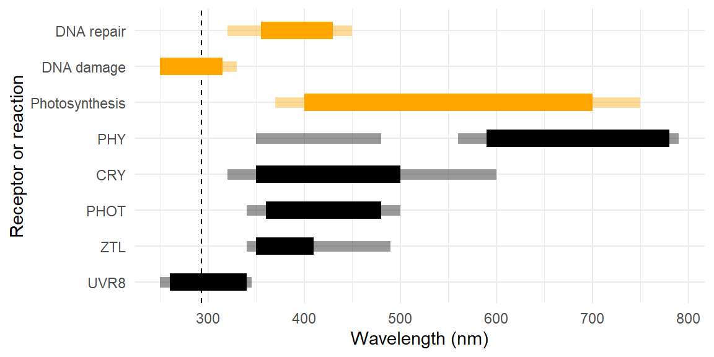
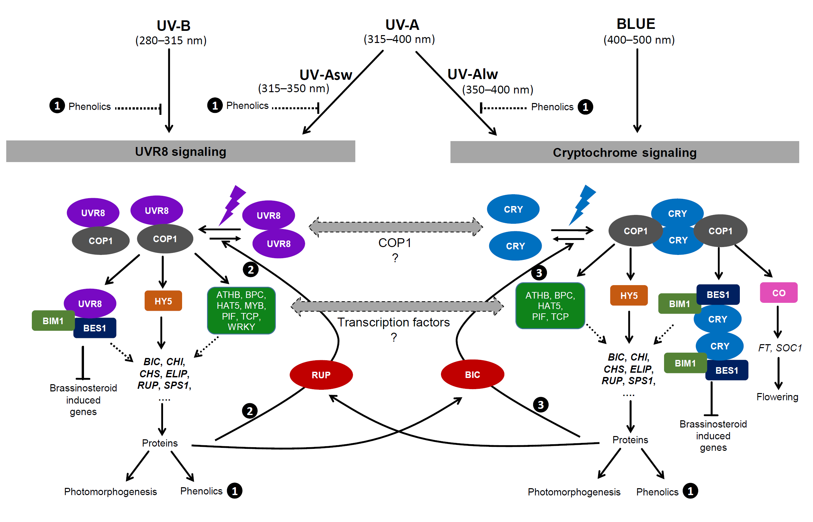
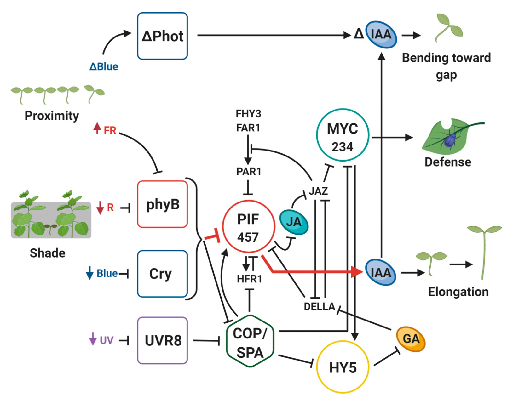

![]()

1 Introduction
Research in Plant Photobiology
1.1 Research on plant responses to ultraviolet radiation (1 ed)
This section reproduces the section 1.1 from the 1 ed, published in 2012, with only minor edits for style and clarity.
Plants are exposed to ultraviolet (UV) radiation in their natural habitats. The amount and quality of UV radiation they are exposed to depends on the time of the year, the latitude, the elevation, position in the canopy, clouds and aerosols, and for aquatic plants water depth and water quality. Ultraviolet radiation is a carrier of information about the environment of plants. However, when exposed to enhanced doses of UV radiation or UV radiation of short wavelengths, plants can be damaged. When exposed to low doses of UV-B radiation plants respond by a mechanism involving the perception of the radiation through a photoreceptor called UVR8 (Jenkins 2009; Rizzini et al. 2011; M. Wu et al. 2011; John M. Christie et al. 2012; D. Wu et al. 2012; Heijde and Ulm 2012). This protein behaves as a pigment at the top of a transduction chain that regulates gene expression. Several genes have been identified as regulated by UV-B radiation perceived through UVR8. Some are related to the metabolism of phenolic compounds and are involved in the accumulation of these metabolites.[^1] However, these are not the only genes regulated by UVR8. Genes related to hormone metabolism are also affected, and this could be one of the mechanisms for photomorphogenesis by UV-B radiation, for example an increase in leaf thickness or reduction in height of plants. Morphological effects of UV-B radiation mediated by UVR8 have been described (Wargent et al. 2009).
The irradiance of UV-A in sunlight is more than the irradiance of UV-B. Plants also have photoreceptors that absorb both UV-A radiation and blue light. The best studied of these photoreceptors are cryptochromes and phototropins. Cryptochromes are involved in many photomorphogenic responses, including the accumulation of pigments. Phototropins are well known for their role in plant movements such as stomatal opening in blue light and the movement of chloroplasts (see John M. Christie 2007; Shimazaki et al. 2007; Möglich et al. 2010 for recent reviews).
The balance between the different wavebands, UV-B, UV-A and PAR (photosynthetically active radiation, 400–700 nm), has a big influence on the effect of UV-B radiation on plants. Unrealistically low levels of UV-A radiation and PAR enhance the effects of UV-B radiation (e.g. Caldwell, Flint, and Searles 1994). One reason for this is that UV-A radiation is required for photoreactivation, the repair of DNA damage in the light.
From the 1970’s until the 1990’s the main interest in research on the effects of UV-B radiation on plants and other organisms was generated by the increase in ambient UV-B exposure caused by ozone depletion in the stratosphere (e.g., Caldwell 1971; Caldwell, Teramura, and Tevini 1989; Tevini 1993; Caldwell and Flint 1994). This led to many studies on the effects of increased UV-B radiation, both outdoors, in greenhouses and in controlled environments. Frequently, the results obtained in outdoor experiments differed from those obtained indoors. This led to the realization that it is important to use realistic experimental conditions with respect to UV-B radiation and its ratio compared to other wavelength bands of the solar spectrum. Interactions of responses to UV-B radiation with other environmental factors like availability of mineral nutrients, water and temperature, were also uncovered. Effects on terrestrial and aquatic ecosystems of ozone depletion, and the concomitant increase in UV-B radiation, have been periodically reviewed in UNEP (2011, and earlier reports).
From the 1990’s onwards, the interest in the study of the effects of normal (i.e., without stratospheric ozone depletion), as opposed to enhanced radiation increased markedly (e.g., N. Paul 2001; P. J. Aphalo 2003; Jansen and Bornman 2012). This was in part due to the realization that even low UV exposures elicit plant responses, and that these are important for the acclimation of plants to their normal growth environment. Furthermore, as these effects were characterized, interest developed in their possible applications in agriculture and especially horticulture (e.g., N. D. Paul et al. 2005).
A further subject of interest in the early 2000’s was the enhanced release of greenhouse gases from green and dead biomass caused by action of UV radiation on pectins (e.g., Messenger, McLeod, and Fry 2009; Bloom et al. 2010). Another subject of research interest was the direct and indirect effects of solar UV radiation on litter decomposition (e.g., Newsham et al. 1997, 2001; Austin and Ballaré 2010).
Concluding that:
To be able to obtain reliable results from experiments on the effects of UV radiation on plants, there are many different problems that need to be addressed. This requires background knowledge of both photobiology, radiation physics, and UV climatology.
1.2 Progress in research (2012-2024) and perspective
Nowadays, more emphasis is put on the role of UV radiation as a regulator of plants’ structure and function than as a cause of damage in plants. However, which effect predominates depends on the UV dose, full exposure spectrum, timing, other environmental factors and plants’ genotype and phenotype. Our perspective has changed also in several respects as summarised below. In addition to the role of blue light in the photorepair of DNA damage mentioned above, blue light is now known to play additional roles in UV tolerance through the activation of photoreceptors (Figure 1.1). More broadly, radiation of different wavelengths activates different photoreceptors and photochemical reactions, triggering complex interactive physiological responses, which at this stage are only partially understood (Figure 1.1).
The UVR8 photoreceptor is widely distributed in plants, and while there is only one UVR8 photoreceptor in Arabidopsis, many species are now known to have more than one photoreceptor in the UVR8 family (Tossi et al. 2019). In the case of cryptochromes, phototropins and phytochromes, higher plants have multiple photoreceptors in each of these families (e.g., Taiz et al. 2015, chap. 15). Maybe Javier could add a couple of lines about mosses, liverworts, etc. (Soriano et al. 2017) In lichens, the accumulation of UV-protective pigments is induced mainly by UV-B radiation (Solhaug et al. 2003). These pigments are produced by the mycobiont and protect the photobiont (Váczi, Gauslaa, and Solhaug 2018). It has been, however, reported that the UVR8 photoreceptor distribution is restricted to the Viridiplantae (Fernández et al. 2016), which seems contradictory unless the photobiont “talks” to the mycobiont or the mycobiont senses UV-B by an alternative mechanism. Is there something new known about this?
Molecular studies have revealed a complex signalling network downstream of plant photoreceptors, that creates crosstalk leading to multiple interactions among the responses to different wavelengths. Individual photoreceptors can have multiple modes of action (Casal, Sánchez, and Botto 1998; Podolec, Demarsy, and Ulm 2021) and the activity of one photorepector may down regulate, up regulate or inhibit the perception of cues by a different photoreceptor (Casal 2009; Zhao et al. 2023). UVR8 and cryptochrome photoreceptors reciprocally modulate their activity at the signalling level through COP1 and BES mediated-interaction, RUP- and BIC- mediated and BES1- and BIM1 mediated interactions also play a role, as well as other transcription factors including HY5 and through optical feedback (Figure 1.2) (Rai et al. 2019, 2020; Tissot and Ulm 2020; Podolec, Demarsy, and Ulm 2021).

Interactions are not limited to molecular signalling. Cryptochromes function both as photo- and magnetoreceptors (Ahmad et al. 2007; Pooam et al. 2018) while phytochromes function both as photo- and thermoreceptors (Casal and Balasubramanian 2019). Downstream of gene expression additional routes for interactions exist: many sensory responses to UV and VIS radiation are mediated by changes in metabolism, catabolism and sensing of phytohormones, including abscic acid (ABA), gibberellic acid, jasmonic acid, brassinosteroids and auxins (Figure 1.3) (Fernández-Milmanda and Ballaré 2021). Absorptive sun-screens or reflective structures in the epidermis, frequently induced by UV and VIS radiation, modify the light environment within leaves (see Rai, Morales, and Aphalo 2021) and even UV-induced VIS fluorescence of mass pigments such as chlorophylls and phenolic metabolites could potentially be sensed by “unexpected” photoreceptors.

Responses to UV-B radiation depend on the current and past spectrum and irradiance of UV, visible and near infrared radiation (Yan et al. 2020; Rai, Morales, and Aphalo 2021). Further downstream, HY5 and PIFs mediated signalling depends on UVR8(s) and cryptochromes but also on phytochromes (Sellaro et al. 2024) and phototropins (Vandenbussche et al. 2014). A recent proposal is that the multiple roles played by photoreceptors sharing signalling network components are made possible by compartimentalization into distinct tissues and cell-types (Depaepe, Vanhaelewyn, and Van Der Straeten 2023).
In recent years, the importance of the role of time and timing in responses to UV radiation became more obvious. Outdoors, the light spectrum changes during the course of the day and with seasons, with proportionally more UV-B radiation the higher is the sun in the sky. This could explain some of the time-dependent responses of plants growing in the field. However, in addition, the circadian clock regulates gene expression, and other reponses to light mediated by photoreceptors
The photoreceptors UVR8, CRYs and PHYs jointly control responses affecting optical properties and display of leaves that can modify the sensitivity to UV radiation by attenuating it or reducing its interception (Rai, Morales, and Aphalo 2021). The optical properties of the epidermis vary strongly in response to exposure to blue light and UV radiation and may also vary even during the day (Barnes et al. 2015) and seasonally (Pescheck2019?).
Even changes in optical properties of single stranded DNA in chloroplasts can affect sensitivity to damage by UV-B exposure (Saeid Nia et al. 2023). Plant species differ in their responses as a result of evolution; however broad patterns can be detected across species on the responses to different wavelength bands of sunlight (e.g., Wang et al. 2020). Thus, current understanding of plant responses to UV, VIS and NIR radiation indicates that a broader perspective is needed in the study of plants’ responses to UV and VIS radiation across multiple time scales (Barnes 2017; Barnes et al. 2018; Robson et al. 2019).
In sunlight, because of the shape of the solar spectrum, UVR8 “the UV-B photoreceptor” mediates responses to both UV-B and UV-A2 radiation, while CRYs are more responsive to solar blue light than to UV-A1 radiation (Rai, Morales, and Aphalo 2021). That responses to UV-A1 and UV-A2 radiation are mediated by different photoreceptors, introduces the need to differentiate between UV-A1 and UV-A2 in controlled environments as well as outdoors (Rai, Morales, and Aphalo 2021). In the case of some responses UVR8- and CRY-dependent responses complement each other, and a strong phenotype is observed only when both photoreceptors are inactive (Rai et al. 2020; Tissot and Ulm 2020). When considering UV experiments in the field, these distinct roles of UV-A1 and UV-A2 in sunlight provide a possible explanation to some of the puzzling effects previously reported for UV-A controls in UV-B experiments (Verdaguer et al. 2017).
Both acclimation and adaptation are crucial to fitness of wild plants, and for yield of crops subjected to breeding (Pedro J. Aphalo and Sadras 2022). As a result of adaptation and breeding the genotype changes over multiple generations, more precisely the frequency of alleles encoding selected-for traits increases in the population. Acclimation is the result of plasticity allowing the expression of different phenotypes from a given genotype. Acclimation occurs when the previously experienced environment affects later responses favourably. Acclimation can be triggered by a cue or variable that is not necessarily mechanistically related to the later response because environmental correlations in the natural environment are exploited by plants and other organisms as sources of information (Pedro J. Aphalo and Sadras 2022). Time is important with respect to the developmental stage and previous “experience” (a life-time memory) (Rai et al. 2019) and, in some cases at least, previous generations’ “experience” (maternal effects) (Yan et al. 2020). Developmental stages also impose constraints on acclimation, because as the life of a plant progresses, more past commitments limit the remaining room for plasticity (Novoplansky 2009).
Acclimation of stomatal responses in response to exposure to UV radiation (Ač et al. 2024) and of photosynthesis to high versus low light levels (Brelsford et al. 2018), can be relevant to drought tolerance (Jansen et al. 2021; Pedro J. Aphalo and Sadras 2022) and also involves the participation of photoreceptors, sensing UV radiation. In the case of stomata, acclimation dependent on UV radiation can involve changes in opening speed as well as in relative sensitivity to radiation of different wavelengths (Aasamaa and Aphalo 2017). However, a direct role of UV radiation in stomatal opening and closing at a time scale of minutes remains controversial.
The importance of photoperiodism in some plants’ responses has been recognised for a long time. However, recent progress has shown that not only photoperiodic, stomatal and photosynthesis responses but also photomorphogenic responses depend on the time of day (Sellaro et al. 2024). The daily time course of UVR8 dimerization state (Liao et al. 2020) and the seasonality of responses mediated by UVR8 are also two important aspects of timing (Coffey and Jansen 2018).
Temporal (from seasonal to milliseconds) and spatial heterogeinity in the light environment of plants are an ever present feature outdoors (Hartikainen et al. 2020; Kotilainen et al. 2020; Durand and Robson 2023). Furthermore, even if in its infancy, the study of responses to pulsed light has shown that photoreceptor-dependent responses are not proportional to the average light conditions during the photoperiod, but instead, temporal integration of cues is far more complex and can involve multiple photoreceptors, including UVR8, and PHYs (Sellaro et al. 2024). The contributions of UV-A1- and FR radiation as drivers of photosynthesis have been recently reassessed (Turnbull, Barlow, and Adams 2013; Sun et al. 2024; Zhen, Iersel, and Bugbee 2022).
While much of the early research on plant UV-responses was driven by the need to understand the consequences of stratospheric ozone layer depletion, current research is focused on understanding the role of UV acclimation at different organisational levels. Molecular studies are still heavily focused on Arabidopsis but studies of tomato, rice and some legumes have become common. For whole-plant studies the choice of species has been influenced by the increasing interest in the potential use of UV wavelengths in protected cropping, where exposure to UV radiation can be used to increase the content of desirable plant metabolites (Neugart and Schreiner 2018; Crestani et al. 2024), adjust plant morphology resulting in a more compact and stocky plant (Qian et al. 2021) and induce stress resistance (Crestani et al. 2023). Similar effects of specific wavelength bands of visible radiation have been described (e.g. Popp 1926; Wassink and Stolwijk 1956) and their relevance to horticulture recognized (e.g. Reinders-Gouwentak, Smeet, and Andeweg 1951) already long time ago. The increasing adoption of LED-based illumination for plant cultivation facilitates the use of different spectra. This has lead to increased interest in research on plant cultivation under artificial illumination and the optimization of energy use targetting harvest volume as well as organoleptic and nutritional quality (XXXXXX?). To study plant responses to UV, VIS and/or NIR radiation, consideration of the whole daylight spectrum as well as of the life history of the plants is necessary. It is also necessary to keep in mind relevance to agriculture (Sadras et al. 2021), biological resilience (Thorogood et al. 2023) and the UN Sustainable Development Goals.
Twelve years ago, it had already been recognised that the balance between UV-B radiation and longer wavelengths and the timing of UV-B exposure at noon were needed for relevance of research to plants growing in sunlight. Research in the last 12 years has revealed complex signalling, making it important also for mechanistic UV studies in controlled environments to be aware of VIS and NIR radiation and the corresponding photoreceptors, and vice-versa. This is reflected in that several currently active research groups have already bridged the artificial divide between UV plant photobiology and the rest of plant photobiology.
1.3 Scope of this second edition
Given emerging insights into the importance of crosstalk between different wavelength bands, photoreceptors and signalling pathways, in controlling plant UV and VIS radiation responses, for this second edition we have broadened the scope of the handbook to include a wider range of wavelengths (\(280-900\,\mathrm{nm}\)) and changed the title.
To be able to obtain reliable results from experiments on the effects of UV and VIS radiation on plants, there are many different problems and decisions that need to be dealt with. This requires background knowledge of photobiology, optics, radiation physics, the natural radiation environment and its climatology, which we cover in the first chapters. Later chapters cover skills in the design of experiments, quantification and manipulation of the UV and VIS radiation environment, plant cultivation, data collection, data visualization and data analysis. We have however, avoided overlap with other existing publications by excluding, at least initially, methods for the measurement of photosynthesis or plant growth, and chemical/biochemical methods used at the laboratory bench.